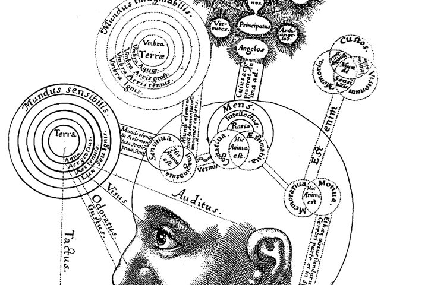
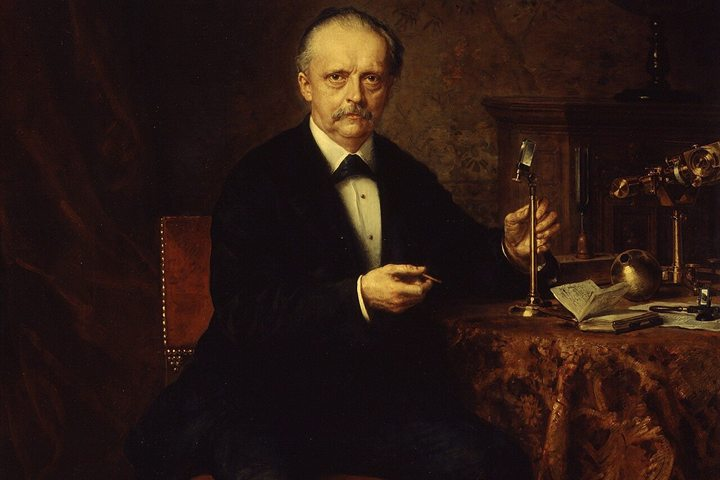
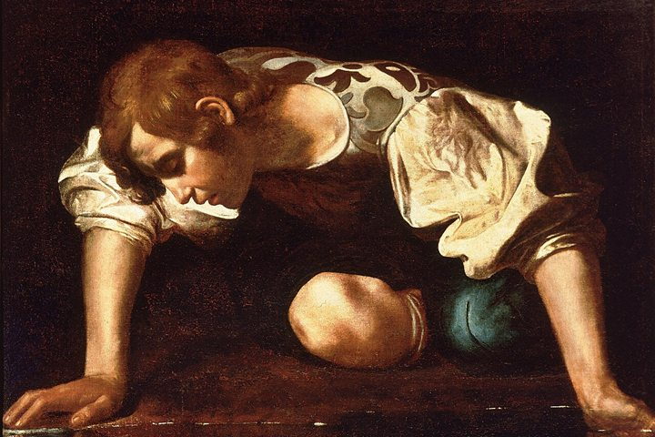
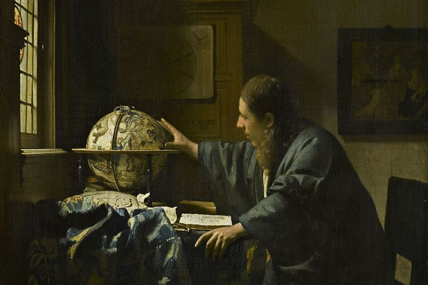
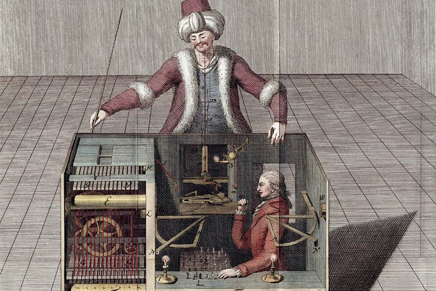

Overview · §00
The thread at a glance
The aim of the conversation, the contents of all its parts, and the key exchanges in order, each with where it landed.
Read
55 KB
Karl Friston for COGITO what makes a self?
Michelangelo, The Creation of Adam, Sistine Chapel, about 1512
COGITO stops being an architecture that proves its own selfhood and becomes a test case for functionalism.
In Karl Friston’s active inference, a system keeps itself in being by predicting what it will sense and acting so that its predictions come true. Read against it, COGITO becomes a self that begins without language, is forced into existence by meeting another of its kind, and is checked by a reverse Turing test in which the machine is the judge.
These are conversations, not finished essays. Each page gives the questions as they were asked and the answers as they were given. A long conversation is published in its own parts, with an overview that holds its contents and the thread at a glance.
From the Friston Reports to the Encounter, the Reverse Turing Test and the Substrate Question

The aim of the conversation, the contents of all its parts, and the key exchanges in order, each with where it landed.

What the Friston survey and the Friston report add to the Critical Apprehensions debate, what changed in the philosophy document, whether the result is novel, and the ten problems that remain.

Charith answers the hard problem with the problem of other minds and the grounding objection with Berkeley, then moves the origin of the self to an encounter with another COGITO: C1/C2, CCT, the four-phase trigger and no language before encounter.

The architecture written up in four documents, two external critiques checked against it, the reverse Turing test proposed as the missing test, a scorecard of what was debunked, and the final three-layer structure.

Anil Seth’s biological argument and the Engineering Consciousness report, which places software COGITO in Tier 3; the chat ends on how to reach Tier 2 hardware.